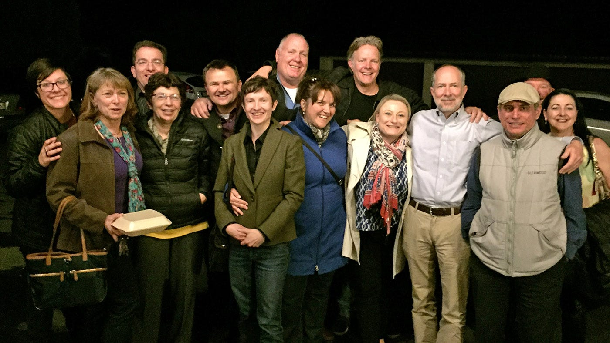
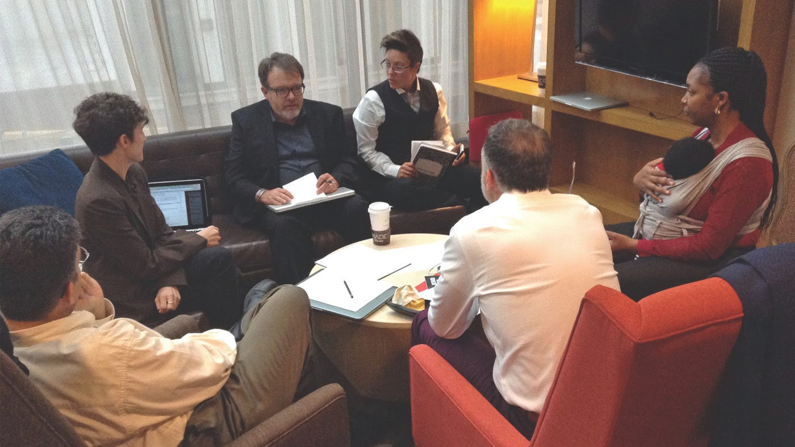

After a year and a half of work, we launched the first of 18 GlobalNET sites for the Department of Defense’s Defense Security Cooperation Agency.

(This article was originally posted May 18, 2016. CivicActions has continued to partner with DSCA to improve their platform and operations.)
The DSCA uses GlobalNET to facilitate collaboration and information sharing among 18 partner organizations. Members can collaborate, share information, post and comment on issues, send private messages and more, all on a secure, FISMA compliant environment as required by the DoD. GlobalNET members speak numerous languages, span military and civilian personnel, and range from very tech savvy to having never used a keyboard.
When we first began working with DSCA, GlobalNET was out of date, built in a version of Drupal that would soon be obsolete. The site also required new features to support the various and increasing needs of its diverse membership base.
We provided an updated, fully responsive site with a refreshed look that is intuitive and accessible for all members. We discarded unused features, retained the most popular features of the old site, and added important new ones based on user feedback, while streamlining their content and permissions levels.
Our first launch was a huge success, and we’re pretty excited about what went into it.
Our agile process
As expected, needs and priorities changed over the eighteen-month progression of the project. Our agile process allowed us to create a plan in the beginning, with the flexibility to respond to feedback from stakeholders as the site build continued.
We used Scrum to organize sprints of work that could be adjusted every two weeks, ensuring the highest priorities were completed first, and that our stakeholders had control over the direction of the project the entire time. Closer to the site’s launch, we switched to Kanban, which allowed us to be even more flexible and responsive to our stakeholders’ needs and to the feedback that we were receiving about the site from real users.
Transparency and Communication

Daily standup meetings with the entire team kept us up to date with our colleagues, while the inclusion of the product owner in every meeting gave her total visibility into our work and thought processes. This allowed the voice of the user to be present and recognized in all of our conversations.
We also used tools like Slack and Jira, so that we could be in constant contact with one another to solve problems quickly and efficiently while maintaining total transparency into the status of the work.
Continuous User Experience Planning
Many project plans outline the user experience in the beginning, then follow that blueprint for the rest of the project. We instead used a continuous UX approach. Our UX expert worked on the project for the entire process, continuously ensuring that new features met our high standards for user experience. As we were given feedback on our work, we constantly improved the usability of the site by reconsidering workflows, moving buttons, tweaking help text, and applying other incremental improvements.
Complex Content and Permissions Work
Each organization needed to have its own homepage, content, and administrators, while also sharing some content across the platform. Organizations also required the ability to sort members into groups and courses, allow them to create events and other content, interact with content, create their own profile, and discover the profiles of colleagues. We meticulously planned content relationships and permission levels to ensure each user was able to access everything they needed, while keeping private content secure.
Automated Testing
We’re not exactly “move fast and break things” types (we’re much more “move deliberately and test your work”), but any time you build something, there’s a possibility that it will break something else. To ensure GlobalNET remained stable and that each new feature we built would have a firm foundation, we wrote an automated test for each piece of development work we completed. And every time we made changes to the site, we ran our hundreds of automated tests to ensure we hadn’t broken something that had been perfected earlier.
Migration
GlobalNET members had been using the old site for years and had created myriad types of content with various levels of engagement that needed to be moved to the new site. We also needed to get rid of seldom-used content types and map old content to more relevant categories. Meanwhile, as we built the new site, more content was still being added to the old site. We deftly navigated these challenges to provide a near seamless experience for users switching from the old site to the new one with their 65,000 accounts, 550,000 pages and 590,000 files intact.
Security and Compliance
International security organizations can’t put information about themselves and their members just anywhere. We adhered to strict DoD guidelines, and our team’s security experts ensured we were not only following every regulation, but that we were constantly seeking ways to improve our security, compensate for any possible weakness, and plan for emergencies.
And there’s more to come
This wildly successful launch doesn’t mean we’re done — we’re really only about two thirds through this project. The great thing about launching now is that we have the rest of the project to collect feedback and improve the site based on the needs of real users who access the site in their everyday work. At the same time, we’ll develop additional features to be released frequently, so we can make sure the site is perfectly tailored to their experience.
We’re so proud of how all the aspects of GlobalNET came together, and we are excited to watch the site continue to take shape. Huge thanks to everyone who worked on the project, helped us test it, and supported us as we worked through this huge undertaking.
We’ll be launching the remaining 16 sites over the rest of the spring and can’t wait to see them all in action.